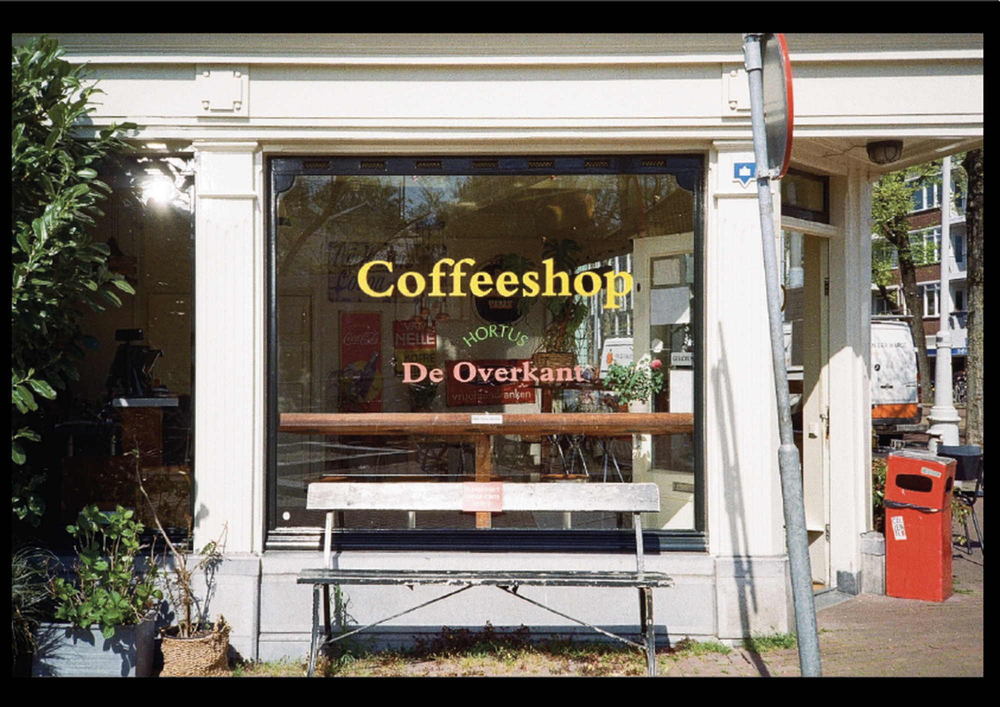
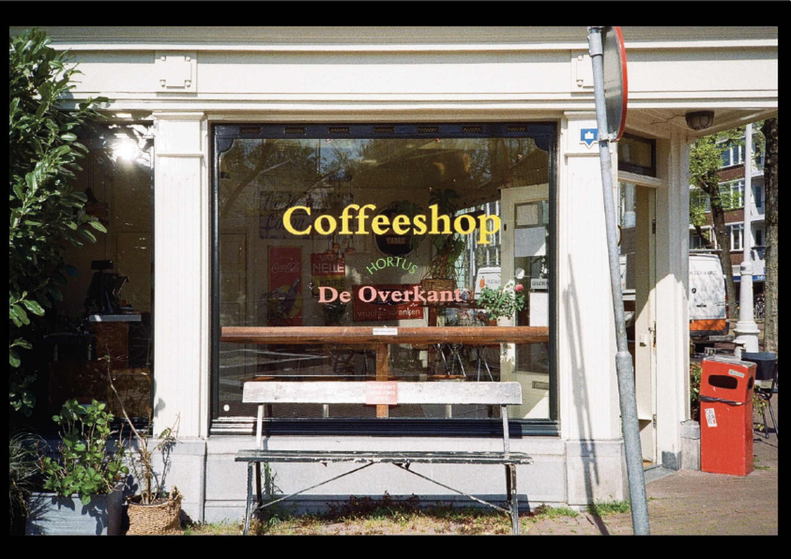

Passionnée par la photographie et curieuse de découvrir de nouvelles cultures, je réalise des carnets photographiques lors de mes différents voyages. L’idée est de capturer et faire ressentir l’univers que chaque ville dégage par la photographie. J’utilise un appareil photo argentique, il me permet d’avoir une meilleure analyse de l’environnement et d’être minutieuse envers chaque détails. C’est un bon moyen pour moi de travailler la composition dans un espace.
2023 - Projet personnel

 
